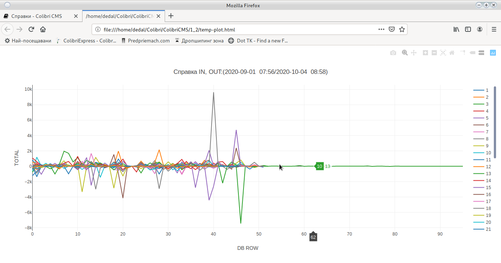

Reference

Reports for long periods of time can make the program hang Just wait for the information to be processed.
Each report opens in its own tab, generating a table with the necessary information

It is possible to generate a schedule. To generate the graph, make sure that the [Full Screen] option (config_system.html # _2) is off.

You can sort each table by clicking on the column name. In the graph, remove the deleted lines from the legend on the right.
Select the required report from the left.
Choose a start and end date.
Use the filtering and fine-tuning options.
Click Generate.
The opened new tab contains the necessary information.
Customers

You can see the full name of the setting by hovering over the name.
Earning bonuses
Reference for all bonuses earned by a customer through the bonus system.
Does not show Bonus Cards
Money Back paid
Reference for all Money Back payout
Printed coupons
Reference for all printed coupons including free printed
Input Output
Reference for inputs and outputs made through cash system
Statistics
Statistics of the entire game per client for the specified period
Bank transfers
Information about money passed through ATM terminal
Number of cards
Statistics on the number of cards held by a customer
Accumulated moneyback
The amount of money back bonus accumulated by a customer
Money on the card
Money that the client has on his card.
Accumulated points
The amount of bonus points accumulated by a customer
Points in Money
Points can work as raffle tickets or be redeemed for cash.
Expenditure orders
Cash orders printed by the program. POS printer required
No calendar is used
The reference is for all available cards
Possible delay with a large number of cards, please wait
Machines
IN, OUT, Total
Information on the realization of the machines by electronic counters.
Generated Bill
Shows were generated by the machine
Return
% of machine return.
For proper operation, enter the WON and BET counters at initialization.
Mechanical IN, OUT, Total
Information on the realization of the machines by mechanical counters.
Reports
Reference for all made reports and cash orders
Select type and date
Use Double Click to open the report

Use double click to fix a report
Possible errors when editing a Monthly Report.
Input Output
This report will show every deposit and withdrawal of money from the machine. Machines keep the last 50 - 100 deposits/withdrawals. All others are kept on the server.
SMIB Log
Error report generated by SMIB controllers
Requires:
Active option to send log to server
Machine repair
Information on all repairs performed by Service
Reset machines
Reference for reset machines from Service
Croupiers
Transfers
Internal money transfers between different users
View Transfers
Removed
Shows how many and on which machines it was removed.
Look at:
Remove Bill from Report and Remove Bill in Shift
Missing
Report on credited and paid absences
Reported money
The amount that the croupier reported after end of shift
Income
Reference for all revenue other than machine input
Expenses
Reference for all costs other than machine output
Log file
Records all the actions of the croupier (Open door of the bill, Open central door, restarted SMIB, etc.)
Bonus cards
All bonus cards placed by the croupier
Card Input/Output
Information on paid and added money in the cash system
Requires active cache
Work time
Shows the number of hours worked.
Jackpot

You choose the start and end date. Use the Generate button.
The information is taken from the jackpot server and requires a stable network connection.
Do not run a report for long periods of time, it may slow down the jackpot server or it will be impossible to transfer the information.
Prints a report on a printer
Requires configured printer or PDF reader
Sends a report by E-Mail to the owner.
Requires configured email address
Export
Exports the lookup to a Microsoft Excel table in xlsx format. You need to have an office package installed to see it after export